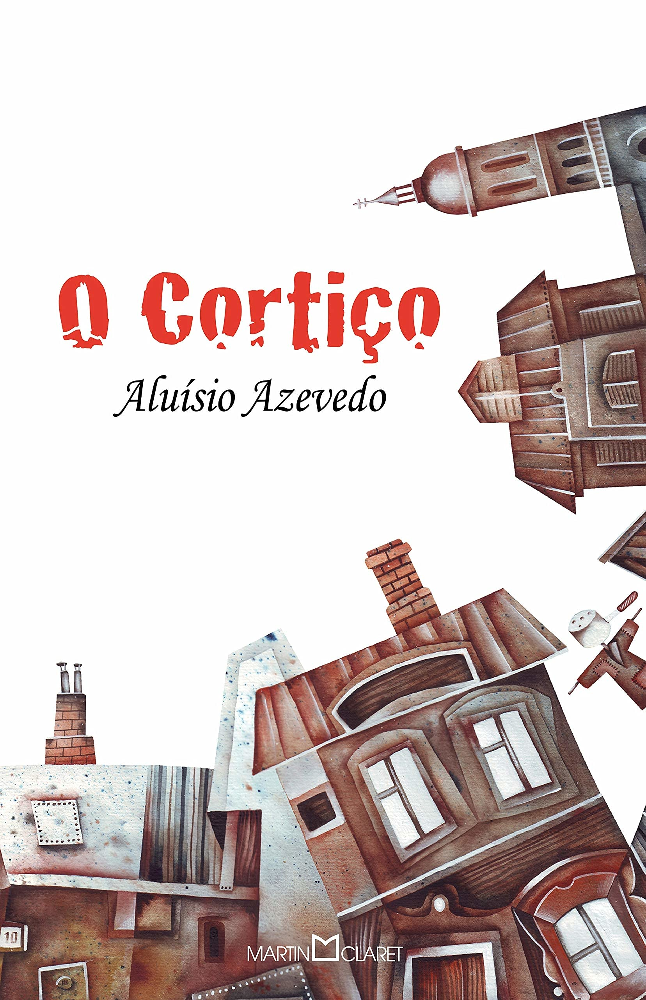

Sobre a obra
O cortiço é um livro de romance produzido pelo escritor Aluísio de Azevedo fazendo parte do movimento Naturalista Brasileiro e se passa no final do século XIX, a obra retrata pessoas comuns do Rio de Janeiro e o Personagem Principal é o João Romão que é um português ambicioso que vira proprietário da habitação coletiva e explora seus empregados inclusive a sua amante Bertoleza que era uma escrava fugida e ele acaba por pegar o dinheiro que ela o d que ela o deu para comprar sua alforria, e ele compra uma alforria falsa enganando-a, e vizinho ao João morava o burguês Miranda um comerciante de tecido casado com Estela que se apresenta como uma esposa infiel; e ao decorrer da historia o João vai ascendendo socialmente monopolizando em cima daqueles cidadãos mais pobres do cortiço, a obra também foca nas questões do adultério entre os personagens e na obra essas ações tem grandes consequências como assassinato, alcoolismo e até mesmo o suicídio.
E no final do Livro após o Suicido da Bertoleza que se matou por recusar-se a ser escrava de novo por conta das mentiras de João Romão que iria entrega-la a seus donos, João após olhar o corpo dela vai até a sala e recebe a visita de Jovens do Clube Abolicionista que queriam marcar um jantar em homenagem a ele por suas contribuições a causa e dessa maneira mostrando toda a Hipocrisia e maldade de João Romão em busca de sua ascensão e ironizando pelo fato de tal pessoa agora ser reconhecido como um abolicionista o Autor termina sua obra.

Ficha técnica
Nome: O Cortiço
Autor: Aluísio Azevedo
Gênero: Romance
Est. época: Naturalismo
Tempo: Fim do sec. XIX
Espaço: Rio de Janeiro
Narrador: 3ª pessoa
Sinopse
O romance mostra as mazelas e a vida miserável dos moradores de duas habitações coletivas. João Romão é ganancioso comerciante de origem portuguesa, dono de um terreno no Rio de Janeiro onde constrói moradias de baixo custo para obter renda. Bertoleza, uma negra escrava, vive com ele e o ajuda no armazém que ele mantém no lugar. O cortiço é erguido aos poucos, para revolta do negociante Miranda, vizinho de João Romão. Os dois travam uma briga por causa da construção do cortiço. Assim, é mostrado as lutas entre os moradores, os embates com a polícia, a ganância de João em tornar-se rico às custas dos miseráveis a seu redor, mostrando dessa forma o cotidiano das classes baixas às vésperas da Abolição e da Proclamação da República.